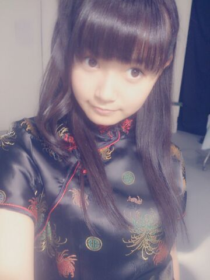
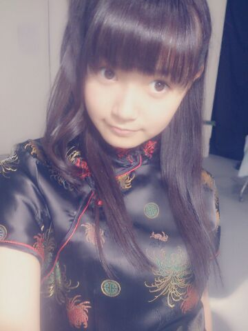
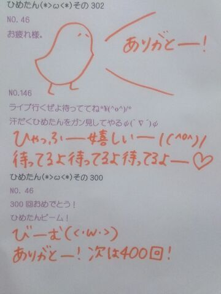

| 2013/09 08 Sun | ひめたん(*>ω<*)そ の339 |
アメブロの方も更新しました！
ぜひそっちにも遊びに来てねー
来ないとシバくよ( ´ ▽ ` )ノもちろん冗談☆
今日は撮影でした！
生写真をいぱーい撮りました
あっあのねーあしゅがね
新しい自己紹介考えてくれたんだよー
いくよー
／
ひ、ひよわで
め、めかにずむな
か、かき氷メーカーこと中元日...芽.........
＼
あっさーすがみなさんですね
「あーなるほどねあいうえお作文なんだねー」って
そうなんです！そーゆーことなんです！
あのね、テーマは
ひ・め・か で始まる難しそうな単語
ねえ、ひよわってなーに( ^ω^ )( ^ω^ )( ^ω^ )
やっぱり表情作るのって難しいな。
まだまだやなーって改めて思った日でした
みり愛ちゃんと目が合うと
「はわわわわーーーあ(〃ω〃)」って
言い合ってしまうプレイが定着してきた！
いや照れのニュアンスが入るのに関しては
一方的だってことはもちろん知ってるのよ。
だってかわいーんだもん
おっといけねーここまで写め無しか！
すっかり忘れてたごっめんねー(´・ω・｀)

生写真のチャイナ服です。謝謝！
妹がインドネシアから帰ってくる＼( ^O^ )／
あとでみなさんの分まで
思い出話聞いとくから安心してー！
楽天スーパーSALEバージョン！
川後Pたちにとうとう
「リボン辞めたら？」と言われてしまった(笑)
あのね、愛未のキャップをかぶったら
結構しっくりきたらしいのー
でもね！ひめたんはリボン大好きなんだからねっ
ぜひそっちにも遊びに来てねー
来ないとシバくよ( ´ ▽ ` )ノもちろん冗談☆
今日は撮影でした！
生写真をいぱーい撮りました
あっあのねーあしゅがね
新しい自己紹介考えてくれたんだよー
いくよー
／
ひ、ひよわで
め、めかにずむな
か、かき氷メーカーこと中元日...芽.........
＼
あっさーすがみなさんですね
「あーなるほどねあいうえお作文なんだねー」って
そうなんです！そーゆーことなんです！
あのね、テーマは
ひ・め・か で始まる難しそうな単語
ねえ、ひよわってなーに( ^ω^ )( ^ω^ )( ^ω^ )
やっぱり表情作るのって難しいな。
まだまだやなーって改めて思った日でした
みり愛ちゃんと目が合うと
「はわわわわーーーあ(〃ω〃)」って
言い合ってしまうプレイが定着してきた！
いや照れのニュアンスが入るのに関しては
一方的だってことはもちろん知ってるのよ。
だってかわいーんだもん
おっといけねーここまで写め無しか！
すっかり忘れてたごっめんねー(´・ω・｀)

生写真のチャイナ服です。謝謝！
妹がインドネシアから帰ってくる＼( ^O^ )／
あとでみなさんの分まで
思い出話聞いとくから安心してー！
楽天スーパーSALEバージョン！
川後Pたちにとうとう
「リボン辞めたら？」と言われてしまった(笑)
あのね、愛未のキャップをかぶったら
結構しっくりきたらしいのー
でもね！ひめたんはリボン大好きなんだからねっ

 ひめたんの好きな色と
ひめたんの好きな色と
もらったら嬉しいものを教えて
好きな色はぴんく！
何をもらっても嬉しいし、その真心が嬉しいし
言うならひめたんはいつもみなさーんから
素敵な笑顔やおことばたくさーんもらってるよー
いつも本当にありがとーうねー＊＊＊
ひめたんビームの顔文字ってありますか？
(<・ω・>)
みなさーんも単語登録して毎日使おう！便利やで！
生ちゃんのどんなところが好き？
バスん中でスーパーリラックスモードで
素敵なお歌きかせてくれるいくちゃんも
たまーに甘えんぼさんになるいくちゃんも
真面目ーに話してくれる夜遅くのいくちゃんも
全部全部だいすきよ( ^ω^ )/
ひめたんにお誕生日おめでとうって、
いってもらいた...
いや、なんでもないっす(⌒-⌒; )
はーぴーばーすでーとぅーゆ〜♪
お誕生日おめでとー！
ひめたんがバースデーソング斉唱するよー◎
俺、ホントにひめたんが大好きで
家帰ったあと泣いちゃった
それって、気持ち悪い？
そんなことないよー！
むしろ嬉しいよ。ひめたんも会いたいよおお！
またいっぱいお話しようねっ(〃ω〃)
ブログ書くのにどれくらい時間かかりますか？
結構時間かけてるよー♪
てゆかね気がついたらかかってるー
でもね楽しいんだー∩^ω^∩
もみじ饅頭好きですか？
好き！一押しはチーズ味！
好きなジュースなんですか？
りんごジュース☆
ライブ終わったあとラッパ飲みしたくなります
やったことないけどねー
いちごミルクも好き！
握手会の時に名札作っていこうか
迷ってるんだけど、あった方がいいかな？
あったら便利かなー
ぜひ作ってみてね(〃ω〃)
リボン何種類ぐらいもってるのー？？
最近はプレゼントされる機会も多くて
前よりコレクション増えたよー
うーんどれくらいかな
20個弱とかかなあ
まだまだ頑張って集めるよー(｀・ω・´)
ちなみにいっつも２、３個持ち歩いてるよー
今ね、うちわ作ろうと思ってるんだけど、
手作りうちわ作ったら見てくれるカナ？
みるみるみるよー！
そーゆーのって踊りながらも目で追っちゃうの///
いつもありがとうー＊
みなさん！
ひめたんは今年の秋はジャケットを買ったよ！
ジャケット女子になるよ！
この前ままとお買い物行ってね
ライトブラウンとジャケット買ったんだー
よーし今シーズン着倒しちゃうぞー(｀・ω・´)

(＊´・ω・＊)
コメント(339)
2013/09/08 21:00